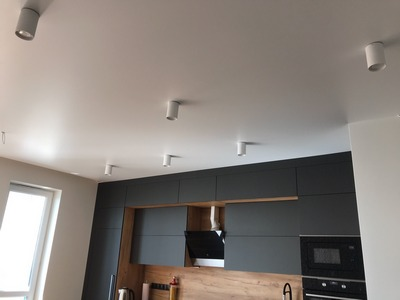
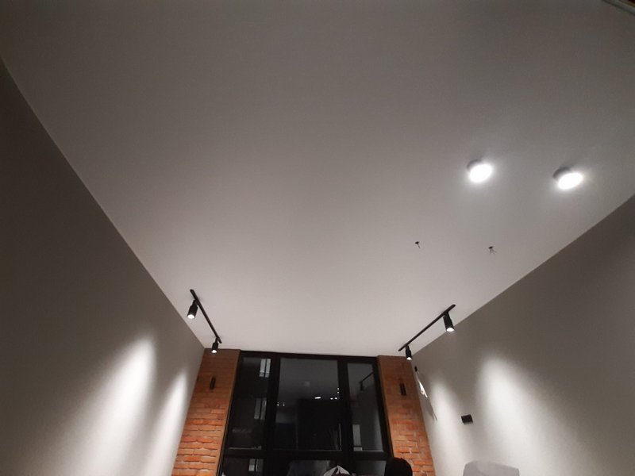

Матовые натяжные потолки в Киеве

Спорить о том, какие натяжные потолки лучше, так же бесполезно, как вести дискуссию на тему кто красивее: блондинки, брюнетки или рыжие. Все люди индивидуальны в своих вкусовых предпочтениях или в понятии красоты. Если вы находитесь на пороге выбора в пользу какой-либо разновидности натяжных конструкций, то эта информация может оказать вам помощь.
Матовые потолки не уступают своим глянцевым и сатиновым собратьям, хотя и не имеют такого блестящего (в прямом смысле слова) внешнего вида. В принципе, долго рассказывать об эстетической стороне такого вида потолочного покрытия, не стоит по вышеуказанной причине. Но разобраться, в чем его особенности все-таки важно. Итак, почему матовость по-прежнему такая востребованная?
Практичность и красота матового покрытия
Объективно, у матового потолка есть особенные отличия, которые делают его столь популярным на сегодня. Среди них отдельно можно выделить самые основные:
- В связи с тем, что технология получения матового покрытия намного проще, нежели у глянца, то и стоимость первых значительно ниже. Доступность цены становиться для многих наших граждан весомым аргументом в пользу совершения покупки.
- При натяжении в помещениях с большой площадью, стыки и сращивания просто неизбежны. На матовых полотнах шов будет практически незаметным. Кстати, матовое исполнение покрытий имеет максимальную ширину полотна в 5 м.
- Если вы решили украсить потолок фотопечатью, то матовые варианты наиболее пригодны для ее нанесения. Рисунок будет выглядеть, как картина на полотне. Плюс ко всему, они имеют самую богатую цветовую гамму.
- Простота в уходе также немаловажный плюс, которым могут похвастать не блестящие поверхности. На них пыль видна меньше, а также разводы после влажной уборки.
Это лишь общие показатели качества матовых натяжных потолков. Но есть у них еще одна особенность, которую нужно рассматривать с точки зрения воплощения дизайнерских замыслов и универсальности для интерьера.

Матовое покрытие в дизайне
Современные производители предлагают огромное количество вариаций на тему цвета. Естественно, решать только вам, но есть некоторые рекомендации по поводу подбора гаммы. Если вы ищите «незаметное» покрытие, то лучше всего отдать предпочтение классическому белому цвету и его оттенкам. Вы точно не прогадаете, так как такой потолок уместен везде и всегда.
Пастельные оттенки пленки станут прекрасным выходом, когда хочется чего-то интересного, но не вызывающего. Теплые цвета добавят красок в интерьер, но не затмят его.
Сторонникам нетрадиционных решений можно заказать фотопечать. На матовом фоне рисунок будет выглядеть, как холст. Сочетание мата и глянца стало самой популярной идеей оформления пространства на сегодня. Зачастую, именно матовая поверхность перекрывает большую часть потолка, а при помощи блестящего глянца выделяют отдельно взятую зону. Например, очень стильно, когда на кухне область над обеденным столом выделена таким образом.
Разновидности матовых полотен
Матовые потолочные покрытия классифицируются по двум основным критериям:
- По материалу: из поливинилхлоридной пленки и ткани из полимеров. Такое сырье дает возможность получит пленку толщиной до 0,18 мм, при этом очень прочную и с высокой прочностью.
- По цветовому решению: однотонные, с несколькими цветами и с принтом. Матовые поверхности в одном цвете могут смотреться, как просто окрашенный потолок. По этой причине разноцветные или полотна с рисунками более востребованы на современном рынке.
Натяжные потолки из матового полотна и их преимущества
Достоинства данной конструкции уже были озвучены вначале статьи. Однако есть еще и достоинства, которые одинаково присущи для всех натяжных конструкций потолков, а не исключительно для одной разновидности. К плюсам относятся:
- К сожалению, затопление сверху – это нередкое для наших многоэтажных домов явление. После установки натяжного потолка вам не страшен никакой потом, поскольку ПВХ материл, способен выдержать до 100 килограмм на квадратный метр полотна. Согласитесь, что этого достаточно, чтобы мебель и техника остались невредимыми. Одноуровневый потолок не пропустит ни капли влаги и не испортится после наводнения;
- Полотно не утратит своей привлекательности спустя долгие годы эксплуатации. В зависимости от производителя, гарантийный срок службы составляет до 20 лет, но на практике эта цифра значительно выше.
- Шумовая и тепловая изоляция потолка. Поскольку потолок никто не утепляет, то использование натяжных полотен способно стать прекрасной альтернативой утеплителю и шумоизолятору. Он удерживает до 60 % больше тепла и до 90 % больше посторонних шумов;
- Экологическая чистота. Поскольку на ПВХ просто не может появиться грибок, плесень и прочие микроорганизмы, а ухаживать за ним проще простого, то такой материал прекрасен и экологичен;
- Стильные решения можно принять на основе такого потолка. Он эластичен и гибок, поэтому позволяет воплощать любые задумки. Такими показателями не может похвастаться ни одна подвесная конструкция;
- Минимальные потери высоты потолка при установке натяжных потолков колеблются в пределах 2-4 см. Это значение становиться весомым аргументом при низких потолках.
- Простота монтажа позволяет сделать все в кратчайшие сроки и избежать кучи пыли или прочего строительного мусора.
Лучшие места для установки матового потолка
В целом, такой вид потолочного покрытия весьма универсален, однако есть помещения, где оно смотрится лучше всего. Итак, фаворитами являются:
- Большие по площади залы и гостиные. В объемных пространствах чистое матовое полотно может заглушить собой все прелести интерьера, тут выигрышнее будут многоуровневые конструкции, где сочетается лоск и мат.
- Кабинеты и рабочие зоны. Тут праздничное сияние глянца будет абсолютно неуместным и отвлекающим фактором. К тому же, в кабинете отлично будут смотреться картина на потолке, а с глянцем декор не сочетаем;
- Детские комнаты. В принципе, причина установки матового полотна такая же, как и для кабинета. Лишнее сияние ни к чему.
Универсальность – главный плюс
Вся наша жизнь, в большинстве времени – это не праздник и веселье, а стандартные будни. Парадный глянцевый блеск со временем может надоесть, а позже и вовсе станет раздражать. Матовое полотно – это идеальное решение для людей, которые желают отдохнуть после тяжелого рабочего дня, расслабиться и отвлечься. Отсутствие бликов создаст атмосферу уюта и спокойствия.
Также матовое потолочное полотно рекомендуется к использованию в том случае, когда вы хотите выделить обстановку самой комнаты, привлечь внимание к мебели или картинам. Глянец по умолчанию отвлекает от остальных предметов и притягивает взгляд в верхнюю часть комнаты. Именно по этой причине, такая поверхность рекомендуется для установки в детских и кабинетах. Что касается гостиной или спальни – тут дело исключительно за личными предпочтениями. Что выбрать, спокойствие и уют или праздник и веселье – решать только вам.
Для помещений с повышенной влажностью, например кухонь и ванных, лучше устанавливать матовые потолки исключительно из ПВХ полотна, а не тканевые. Поливинилхлорид способен выдерживать частые перепады влажности и температуры.
Недостатки матового потолочного полотна
Ко всем плюсам натяжного потолка с матовым полотном необходимо добавить некоторые его недостатки. Насколько они существенны, зависит от того, какая роль отводилась потолку в помещении:
- Матовый натяжной потолок сложно сделать изюминкой интерьера. Конечно, если использовать фотопечать, эффект «звездное небо» или любой другой, а также выбрать полотно яркого цвета, то на потолок сложно будет не обратить внимания, но в остальных случаях выглядит такая конструкция довольно консервативно.
- Матовое полотно не подходит для визуальной коррекции формы и размеров помещения – с этой задачей великолепно справляется глянец и сатин, а матовый натяжной потолок будет выглядеть как идеально ровная и красивая отделка, не больше.
Считается, что шероховатой поверхностью матовой пленки сложнее ухаживать, чем за идеально гладким глянцем, с этим утверждением можно спорить, но именно об уходе нужно сказать несколько слов.
Как ухаживать за матовыми натяжными потолками?
Существует несколько способов очистить матовое полотно натяжного потолка от загрязнений. Каждый подходит для определенной ситуации:
- Сухая чистка – с помощью пылесоса или веника с потолка убирается вся пыль – подходит для еженедельной уборки, в помещениях, где пыли может быть много (квартиры на первом этаже, офисы, магазины) можно проводить чаще.
- Влажная уборка – использовать для этого способа можно только мягкие, без агрессивных составляющих средства и без абразивных частиц в случае порошка. Средство, добавленное в воду, нужно взбить в пену и затем ее нанести на полотно, аккуратно, без сильного нажима смыть тряпкой. Таким образом лучше избавляться от локальных сильных загрязнений.
Если нужно полностью освежить натяжной потолок, то необходимо скомбинировать эти 2 метода. Сначала аккуратно удалить с поверхности пыль, а затем вымыть полотно с помощью специального средства.
Нельзя использовать для влажной уборки жесткие губки и другие твердые материалы. Если пятно не отмывается (например, жир на кухне), лучше нанести на него средство и оставить на некоторое время. Но это подходит только для ПВХ-полотна. Ткань может вобрать много воды.
Натяжные потолки с матовым полотном – это красиво, удобно и недорого. А с услугами компании Nova Stelya – быстро и качественно. Установка матовых натяжных потолков за 1 день – это наше уникальное предложение.
Самые частые вопросы и ответы на них
🤗 Какой эксплуатационный срок матового натяжного потолка?
Зависит от материала изготовления полотна. ПВХ полотно служит 20 лет, тканевые полотна 40-50 лет при правильном уходе. Конечно, речь идет о продукции надежных производителей и качественной установке.
🤗 Можно ли устанавливать матовый натяжной потолок на кухне?
Если в конструкции используется ПВХ-полотно, то такой натяжной потолок станет лучшим решением для кухни. За материалом легко ухаживать, он не подвержен влиянию температур, которые возникают при приготовлении еды, не страшен пар.
🤗 В каких эффектах натяжных потолков можно использовать матовое полотно?
В любых, особенно если материал изготовления полотна – ПВХ. В некоторых случаях специалисты рекомендуют даже отдать предпочтение матовому полотну. Например, эффект «звездное небо» лучше смотрится с матовой поверхностью.
🤗 Можно ли использовать матовое полотно в многоуровневых конструкциях?
Можно. Его можно комбинировать по цвету и добавлять другие виды поверхностей, как-то глянец или сатин. В многоуровневых конструкциях можно использовать и тканевое полотно, и ПВХ-пленку.
🤗 На какую поверхность лучше наносить фотопечать – на глянцевую или матовую?
Смотря какого эффекта, вы хотите добиться, и какое изображение будет наноситься. Матовое полотно четче передает цвета, изображение не бликует при искусственном освещении. Глянец может придать легкий эффект объема, подходит для небольших помещений.